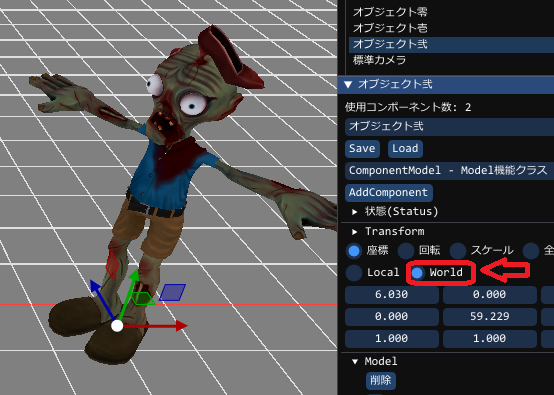
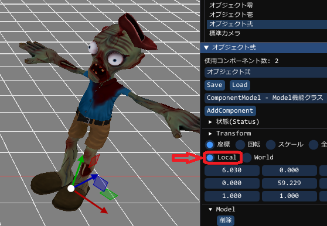
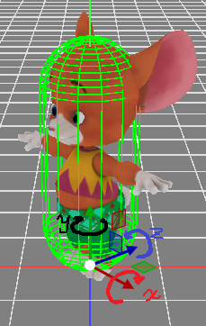

大前提として以下の命令を実行した後、ということで、
objにはすでにObjectが作成されている流れで進めています
objにはすでにObjectが作成されている流れで進めています
// objには、オブジェクトが作成されています
auto obj = Scene::CreateObjectPtr<Object>();
移動方法
移動に関しては以下の種類あります
float3 位置 = {100,0,0};
obj->SetTranslate( 位置 ); // 位置(100,0,0)に移動します
float3 移動量 = {1,0,0};
obj->AddTranslate( 移動量 ); // 今の位置より(1,0,0)だけワールド座標で移動します
float3 移動量 = {1,0,0};
obj->AddTranslate( 移動量, true ); // 今の位置より(1,0,0)だけローカル座標で移動します
ワールド座標系
ローカル座標系
回転方法
回転方法には数種類の方法が用意されています軸に対し、以下のような回転動作を行います

X軸では前後に倒れるような回転
Y軸では左右に向くような回転
Z軸では横に寝るような回転
※軸に対して常に時計回りの方向がプラスとなります
移動・回転・スケールもご覧ください
// グローバル方向が北とすると、東の方向を向くことになります
float3 回転 = { 0, 90, 0 };
obj->SetRotationAxisXYZ( 回転 ); // グローバルに対し常にY軸回転90度の方向を向く
// Updateなどで行うと常に回転し続けます
float3 加回転 = { 0, 1, 0 };
obj->AddRotationAxisXYZ( 加回転 ); // 現在の回転から、Y軸回転1度回転する
// いきなり指定した方向ベクトルに向けます
float3 方向 = { 100, 100, 0 };
obj->SetRotationToVector( 方向 ); // 方向(100,100,0)の方向に向けます
// いきなり指定した方向ベクトルに向けます(Objectの方向も考慮されます)
float3 方向 = { 100, 100, 0 };
obj->SetRotationToVectorOnParent( 方向 ); // 方向(100,100,0)の方向に向けます
// いきなり指定した位置の方向に向けます(自動的にObjectの方向も考慮されます)
float3 位置 = { 100, 100, 0 };
obj->SetRotationToPosition( 加回転 ); // 現在の位置で、位置(100,100,0)の方向に向けます
// 指定した方向ベクトルに少しだけ向けます
float3 方向 = { 100, 100, 0 };
float3 制限角度 = 3.0f;
obj->SetRotationToVectorWithLimit( 方向, 制限角度 ); // 方向(100,100,0)の方向に制限角度分(3.0f度)向けます
// 指定した方向ベクトルに少しだけ向けます(Objectの回転も考慮します)
float3 方向 = { 100, 100, 0 };
float3 制限角度 = 3.0f;
obj->SetRotationToVectorOnParentWithLimit( 方向, 制限角度 ); // 方向(100,100,0)の方向に制限角度分(3.0f度)向けます
// 指定位置方向に少しだけ向けます(自動的にObjectの回転も考慮します)
float3 方向 = { 100, 100, 0 };
float3 制限角度 = 3.0f;
obj->SetRotationToPositionWithLimit( 方向, 制限角度 ); // 方向(100,100,0)の方向に制限角度分(3.0f度)向けます
拡大縮小方法
拡大縮小は以下の方法のみ用意してあります
// 指定したスケーリングサイズに設定します
float3 スケール = { 2.0f, 2.0f, 2.0f };
obj->SetScaleAxisXYZ( スケール ); // スケール(2,2,2)、2倍のスケールに設定する
位置取得方法
取得には2種類存在します
float3 位置 = obj->GetTranslate(); // 位置が取得できます
float3& 位置 = obj->Translate(); // 位置が取得できますが参照です。よってその後の書き換えが可能。
位置 = {100,100,100}; // 位置を(100,100,100)に移動させる。 SetTranslateと同等。
回転取得方法
取得方法は以下のものを用意しています
float3 軸回転 = obj->GetRotationAxisXYZ(); // X軸Y軸Z軸に対する回転が取得できます
float3 軸回転 = obj->GetRotationAxisXYZ(false); // 親も考慮にいれたX軸Y軸Z軸に対する回転が取得できます
スケール取得方法
取得方法は以下のものを用意しています
float3 軸スケール = obj->GetScaleAxisXYZ(); // X軸Y軸Z軸に対するスケールが取得できます
float3 軸スケール = obj->GetScaleAxisXYZ(false); // 親も考慮にいれたX軸Y軸Z軸に対するスケールが取得できます
Matrix(位置・回転・スケール)の取得方法
matrix コンポーネントのMatrix = obj->GetMatrix(); // Matrixが取得できます
matrix ワールド座標系Matrix = obj->GetWorldMatrix(); // 親に依存したMatrixが取得されます
matrix ワールド座標系Matrix = obj->GetOldWorldMatrix(); // 以前の親に依存したMatrixが取得されます
Objectの向いている方向からターゲットへの角度を取得
// 自分の向きからターゲットの角度を取得します
float3 ターゲット座標 = {100,0,100}
matrix ワールド座標系Matrix = obj->GetDegreeToPosition( ターゲット座標 );
// 自分の向きからターゲットの角度を取得します
float3 ターゲット方向 = target_obj->GetTranslate() - GetTranslate();
matrix ワールド座標系Matrix = obj->GetDegreeToVector( ターゲット方向 );